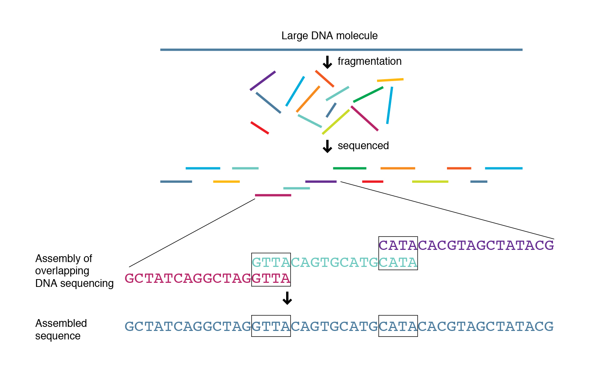

2.2 Assembly
Teaching: 90 min || Exercises: 30 min
Overview
2.2.1 Background
There are two approaches for genome assembly: reference-based (or comparative) or de novo. In a reference-based assembly, we use a reference genome as a guide to map our sequence data to and thus reassemble our sequence this way (we will not do this here with our ONT data but will try it out with illumina data later on in the course). Alternatively, we can create a ‘new’ (de novo) assembly that does not rely on a map or reference and more closely reflects the actual genome structure of the isolate that was sequenced.

Genome assemblers
Several tools are available for de novo genome assembly depending on whether you’re trying to assemble short-read sequence data, long reads or else a combination of both. Three of the most commonly used assemblers for long read data are Flye, Unicycler and Miniasm.
Now that we have been able to see how Quality our Nanopore sequences are, we can can confidently proceed to assemble our bacterial genome. Here, we will perform long read assembly utilizing Flye in combination with Medaka. Other useful tools for assembly includes Unicycler and Miniasm in combination with Racon, or Canu. Another polishing tool in addition to Medaka is NanoPolish with Fast5 files. Each of these tools, have their pros and cons but we will not go deep into them here. Following the assembly, we will QC the products using QUAST.
Disk Usage I — Before analysis
Before we start performing any assemblies, let’s pause and check the space of our current working directory as we did for our previous lesson.
You can do this with the disk usage du command
du -hCurrent Disk Space In assembly_annotation_MTB Directory
~247MB2.2.3 Assembly and Genome Polishing
de novo genome assembly with Flye
Flye is a de novo assembler for single-molecule sequencing reads, such as those produced by PacBio and Oxford Nanopore Technologies. It is designed for a wide range of datasets, from small bacterial projects to large mammalian-scale assemblies. The package represents a complete pipeline: it takes raw PacBio / ONT reads as input and outputs polished contigs. Flye also has a special mode for metagenome assembly.
Nanopore assemblers are still in development, but Flye is a de facto standard.
Usage
We will attempt to start flye by running the below command on our first dataset barcode30. Note that, here we will use our trimmed dataset barcode30_porechopped.fastq.gz.
Let’s have quick look at the assembly_info.txt file and attempt to explain it’s contents.
We can obtain most of the above information by just applying very simple commandline tools to interogate the assembly.fasta file.
Before we move on to the next step, let’s rename our assembly (assembly.fasta) to something more meaningful barcode30_assembly.fasta and copy it to the current directory.
How do we do this?
genome polishing with Medaka
Now that we are done with flye, let’s deactivate the flye environment and activate our medaka environment.
mamba deactivatemamba activate medakaMedaka is an assembly polisher and variant caller made by ONT and used to create consensus sequences and variant calls from nanopore sequencing data. It is the recommended polisher for Flye assemblies. The Medaka documentation mentions that it has specifically been trained on Flye output (it is an ML-based tool).
Medaka requires only basecalled data — .fasta or .fastq and it is 50X faster than Nanopolish.
Usage
We will polish our flye assembly by running the following command:
If Medaka runs out of memory, add option -b 80 to the command-line. If it still runs out of memory, reduce the 80 further until it doesn’t.
Just like we did for the assembly.fasta file generated from flye, let’s rename the consensus.fasta file to a more meaningful name.
-m.
For best results it is important to specify the correct model, -m in the above command we just run, according to the basecaller used. Allowed values can be found by running medaka tools list\_models.
Medaka models are named to indicate
- the pore type,
- the sequencing device (MinION or PromethION),
- the basecaller variant,
- the basecaller version, with the format:
{pore}_{device}_{caller variant}_{caller version}For example the model named r941_min_fast_g303 should be used with data from MinION (or GridION) R9.4.1 flowcells using the fast Guppy basecaller version 3.0.3. By contrast the model r941_prom_hac_g303 should be used with PromethION data and the high accuracy basecaller (termed “hac” in Guppy configuration files). Where a version of Guppy has been used without an exactly corresponding medaka model, the medaka model with the highest version equal to or less than the guppy version should be selected.
Note that we can perform variant calling with medaka. Variant calling for monoploid samples is enabled through the medaka_haploid_variant workflow:
medaka_haploid_variant -i <reads.fastq> -r <ref.fasta>This requires the reads as a .fasta or .fastq and a reference sequence as a .fasta file.
2.2.4 Assembly quality assessment with QUAST
Now that we are done with medaka, let’s deactivate the medaka environment and activate our quast environment.
mamba deactivatemamba activate quastBefore we do any further analyses with our assemblies, we need to assess the quality. To do this we use a tool called QUAST. QUAST stands for QUality ASsessment Tool. It evaluates genome/metagenome assemblies by computing and generating various metrics for assemblies.
These include but aren’t limited to:
- The total number of contigs greater than 0 bp. Ideally, we like to see assemblies in the smallest number of contigs (‘pieces’) as this means there is likely less missing data contained in gaps between contigs.
- The total length of the assembly. We normally know what the expected length of our assembly is (for more diverse organisms like E. coli there may be a range of genome sizes). The length of your assembly should be close to the expected genome size. If it’s too big or too small, either there is some kind of contamination or else you’ve sequenced the wrong species!
- The N50 of the assembly. This is the final metric often used to assess the quality of an assembly. The N50 is typically calculated by averaging the length of the largest contigs that account for 50% of the genome size. This is a bit more complicated conceptually but the higher the N50 the better. A large N50 implies that you have a small number of larger contigs in your assembly which equals a good assembly.
We will run quast in the same assembly environment.
Finally, deactivate the quast environment:
mamba deactivateDisk Usage II — Cleaning up after analysis
Now that we are done investigating our assembling and annotating our genome, let’s pause again and check the space of our current working directory.
You can do this with the disk usage du command
du -hHow much disk space have you used since the start of the analysis?
Credit
Some information on this page has been adapted and modified from the following source(s):
https://github.com/Joseph7e/MDIBL-T3-WGS-Tutorial#genome-assembly
https://github.com/fenderglass/Flye
https://github.com/nanoporetech/medaka
https://quast.sourceforge.net/quast